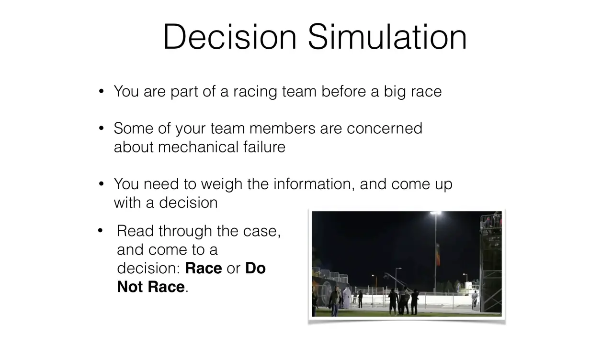
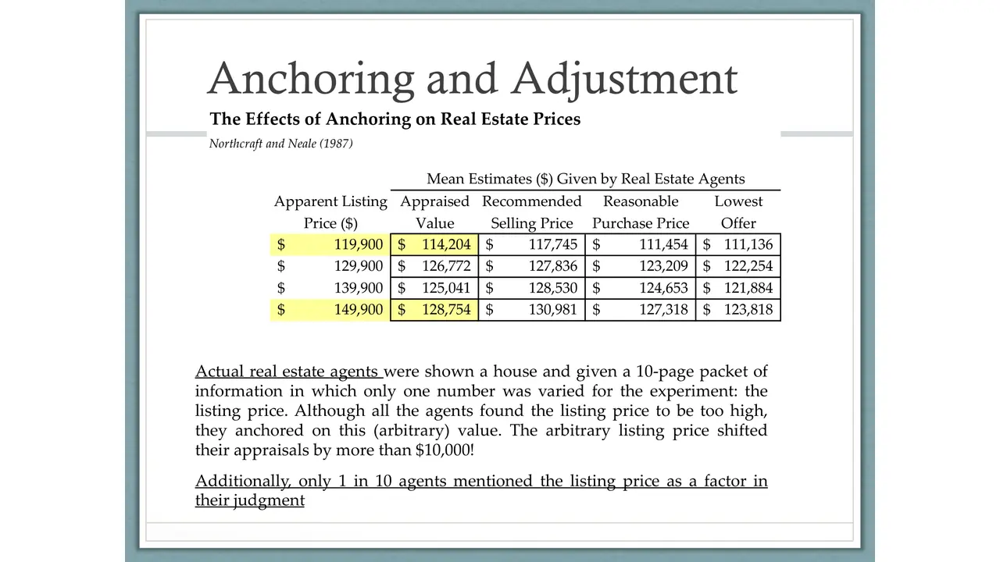
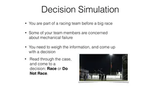
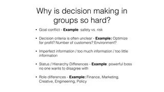
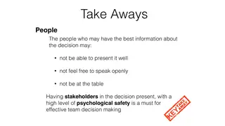
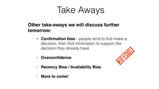

Funding board presentation
Each group uses an assigned decision method to allocate the foundation's budget across proposals, then presents its allocation and its process to the room.
Executive education
Make a group decision under pressure, then find out what your process missed
114 participants from 18 organizations
I taught this course with John Gasper, a political economist. It opens with Carter Racing, a race-or-withdraw call with incomplete data that turns out to mirror the Challenger launch decision. John's day covers heuristics and biases and how to reduce them. On the last day groups have to split $120 million across non-profit proposals using a structured method (dialectical inquiry, Delphi, stoplight, best member) and defend the result.


slides from the decks
I taught from
Fall 2014 (November 23 to 25) · Three mornings, 8:00 to 1:00, at CMU-Q
Scroll the schedule and the slides follow along: five from each session, picked from the decks I taught from.





What students hand in
Each group uses an assigned decision method to allocate the foundation's budget across proposals, then presents its allocation and its process to the room.
Offerings